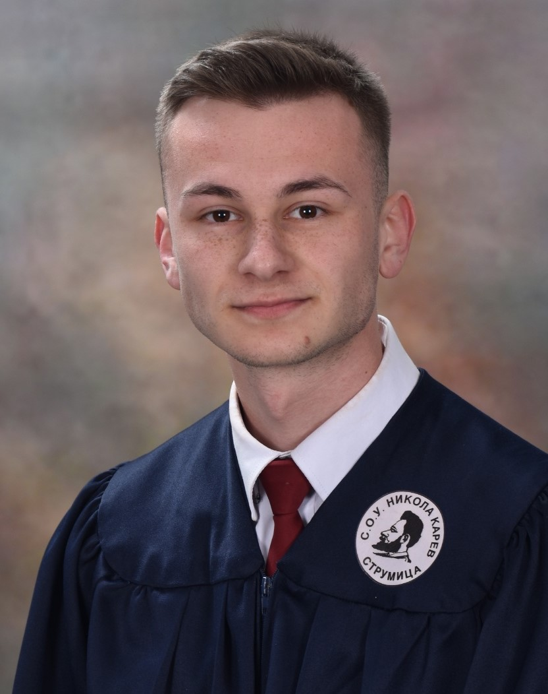

Hi, my name is Mile Georgiev, and I am from Pirava, Valandovo. I completed my primary education in Pirava before pursuing my secondary education in computer technology and automation at Nikola Karev High School in Strumica. Following my passion for software and technology, I embarked on my tertiary education journey at the Faculty of Computer Science and Engineering (FINKI) in Skopje, where I am currently studying Software Engineering.
Throughout my academic career, I have been deeply engaged in exploring the intricacies of software development, driven by a fascination with creating innovative solutions and mastering the ever-evolving realm of technology. This journey has not only enriched my knowledge but has also fueled my ambition to contribute meaningfully to the field of software engineering.
Electrician for computer technology and automation (2019/23)
Software Engeneering - FINKI (Present)
In my leisure time, I am fueled by a diverse array of hobbies that enrich my life and provide me with moments of joy and relaxation. One of my greatest passions is traveling; exploring new destinations, immersing myself in different cultures, and discovering the beauty of our world firsthand brings me immense fulfillment. Whether it's hiking through rugged landscapes or wandering ancient streets, each journey leaves an indelible mark on my heart. Another exhilarating aspect of my life is attending concerts, particularly those featuring loud rock music. The electrifying atmosphere, pulsating beats, and raw energy of live performances resonate deeply with me. It's a chance to connect with music on a visceral level and share unforgettable moments with fellow music enthusiasts. On quieter days, I find solace in the serene embrace of water. Swimming has been a lifelong passion of mine, offering not only physical exercise but also a therapeutic escape. Whether gliding through calm waters or challenging myself with a few laps, the sensation of weightlessness and the rhythmic motion soothe my mind and rejuvenate my spirit. These hobbies are more than just pastimes—they are integral parts of my identity, shaping my experiences and providing me with endless opportunities for growth and exploration.